Why this ride?
I was in the middle of deciding whether to commit another couple years of my life to a new venture. Four days with just myself, a motorcycle, and Google Translate seemed like the right way to figure out if my life was headed in the right direction.
Solo travel has been a huge part of my life. It's how I've discovered who I am, and how I've built confidence that I can handle any situation and make friends wherever I go. I wanted to get back to those roots.
Tokyo on foot and by train was incredibly fun, but as soon as I picked up the motorcycle, it felt like I'd unlocked the rest of the city.
Night 1: Tokyo
I rented my bike from Rental 519, which was a surprisingly easy process. First stop: RICOLAND, a world-famous motorcycle shop full of gear you'd normally only see in an online catalog. There were a ton of bikes out front, but nobody I tried to talk to spoke English.
After I'd gotten my fill of RICOLAND and A-PIT next door (a car tuning shop), I rode to some of the famous parking structures where car meets happen. I was too early and there wasn't a motorcycle in sight, so I got some food and headed back to RICOLAND, where I knew there'd be bikes. I had absolutely no plan. I just hoped to find other riders, connect over a shared interest from opposite sides of the world, and have a few good conversations before calling it a night.
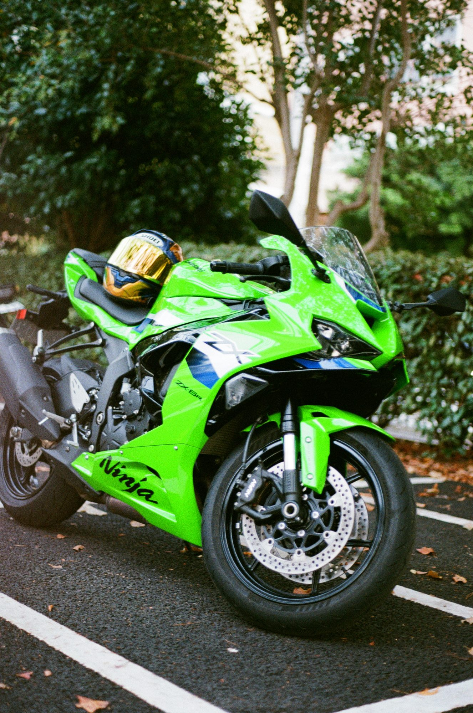
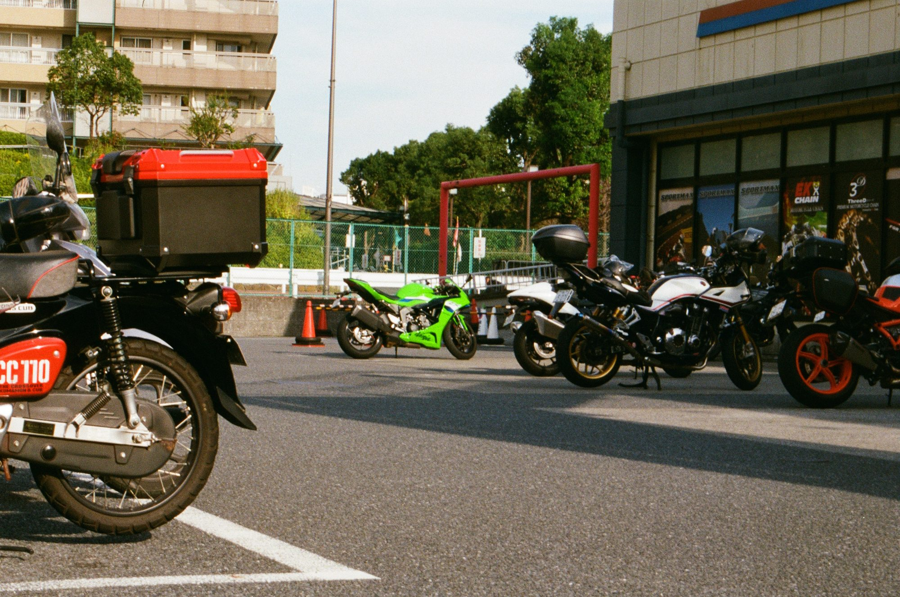
Back at RICOLAND, I decided to aura farm: leaning on my bike, smoking a Goth Girl cigarette. It worked! Someone walked up who spoke incredible English, and we walked the meet together as more bikes and cars rolled in. We found one other English speaker, and the two of them got talking with a group organizing a Halloween ride, with costumes and cosplay on motorcycles. I met three incredibly badass women who didn't speak English, but with our best efforts we managed to tell each other that we all thought we were pretty badass. I heard “kakkoii” (badass) a lot on this trip, which made me very happy haha
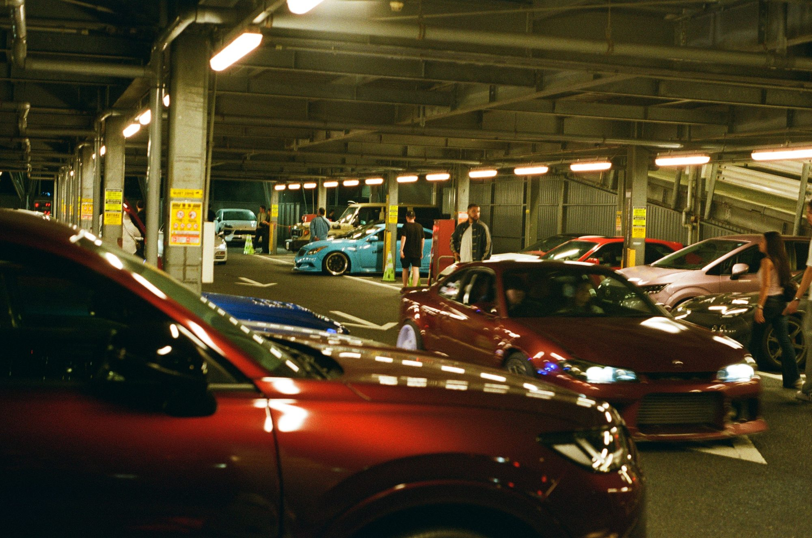
Then they took me on a group ride through Tokyo at night, which was something out of a fever dream. I never thought I'd be doing wheelies on a supersport through Shibuya Crossing!! The riders I met in Japan were a little more conservative than I'm used to. With my U.S. friends, we would have done many more illegal things. We rode until 2 am, when I skipped the late-night ramen to get some sleep before my early departure.
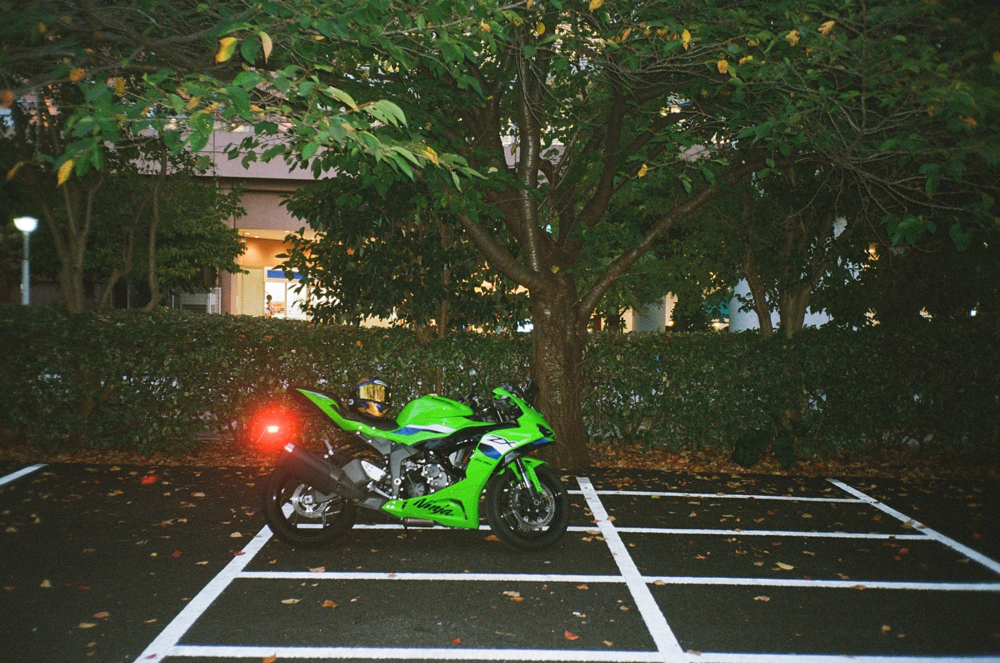
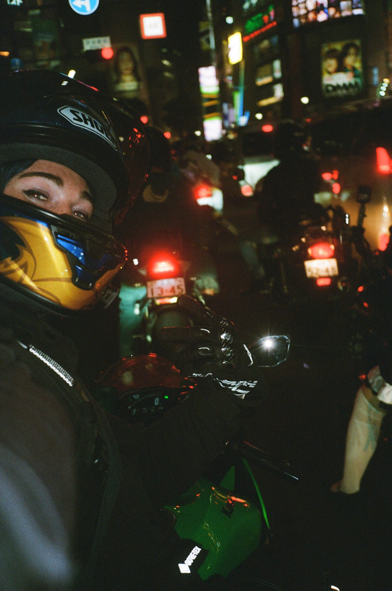
Of course, when I got to my hotel, my reservation hadn't gone through. The only place within walking distance that would take me was a smoking room in a dingy hotel surrounded by night workers. Not my first choice, but it was nearly 3 am and I was exhausted.
Day 2: Tokyo to Toi
My new friend from RICOLAND told me the plan Claude and I had put together was terrible, and that he had much better recommendations. He sent me to Roadside Station Doshi and then down to the Nishi-Izu Skyline or the Izu Skyline, so I marked both. The plan: ride down, come back up, and find somewhere to sleep closer to Fuji.
Doshi was a 3-4 hour ride out of Tokyo, and the culture was completely different. There were tons of motorcycles, but not a single person had any interest in talking to a foreigner. Three people either straight up ignored me or said “okay” and looked away. Outside of Tokyo is where I felt the most dislike of foreigners. Every so often someone was excited to meet the 6-foot-tall, blue-haired white girl you don't normally see in rural Japan, but most people met me with disinterest or distaste. Three strikes and I was out, so I kept riding.
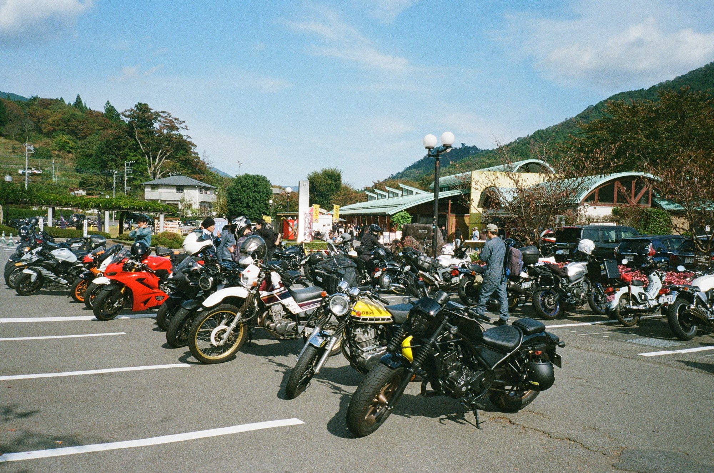
The ride was longer than I expected, and some of the toll roads only took cash, which I didn't have yet. Eventually I made it to the Nishi-Izu Skyline, one of the most incredible roads I've ever ridden. Even at the end of a long day, I had a ton of fun and saw a lot of cool cars and bikes.
In Toi, I parked at my ryokan and went looking for dinner. Two restaurants turned me away: one said no foreigners, and the other said they were full despite being nearly empty. I walked 20 minutes to the only other restaurant in town, and the owners were delightful. They were so interested in why I was there, and I hung out with them and had many drinks before heading back.
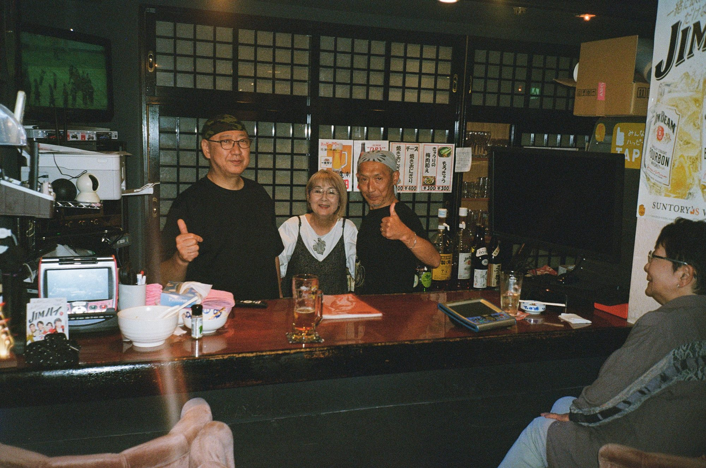
I chose to stay in traditional ryokans even though they're less convenient than a Western hotel, because I wanted to be as immersed in the culture as I could. On past motorcycle adventures, I haven't embraced the culture as much as I wish I had. What's the point of riding through a country if you don't stop, talk to people, and understand what life is like there?
Day 3: Toi to Shibu Onsen
The night before, the waiter had spotted my rotary necklace and asked all about my RX-7 and my trip. He was hosting a classic car meetup at the 7-Eleven at 9 am and said I was welcome to come. I told him I'd do my best, and the timing worked out perfectly: probably eight classic Skyline GT-Rs.
The owners were all classmates who grew up together in that village, driving cars their fathers bought in the '70s and handed down. They invited me to ride the Izu Skyline with them, but I was set on the Nishi-Izu Skyline, which is much more technical and motorcycle-oriented. We rode together toward Izu until I split off with some nice waves.
Then it was time to open it up. The Nishi-Izu Skyline is as twisty as Highway 9 and as empty as Skaggs, with incredible tarmac. It's a 10 out of 10, and I will be back in Japan specifically to ride it. I couldn't get enough and did three passes. It reminded me of discovering Highway 9 before the cops shut it down.
From there I rode through Numazu, with unbelievably beautiful views and geology I don't think you can see in the West.
Then I headed for Mount Fuji. The moment I realized it was in front of me, I pulled over. My first thought was, “Huh, why is half the sky a darker color?” Then it hit me. I was looking at the single largest thing I'd ever seen. The scale of Fuji cannot be overstated. It's a behemoth that dominates the horizon.
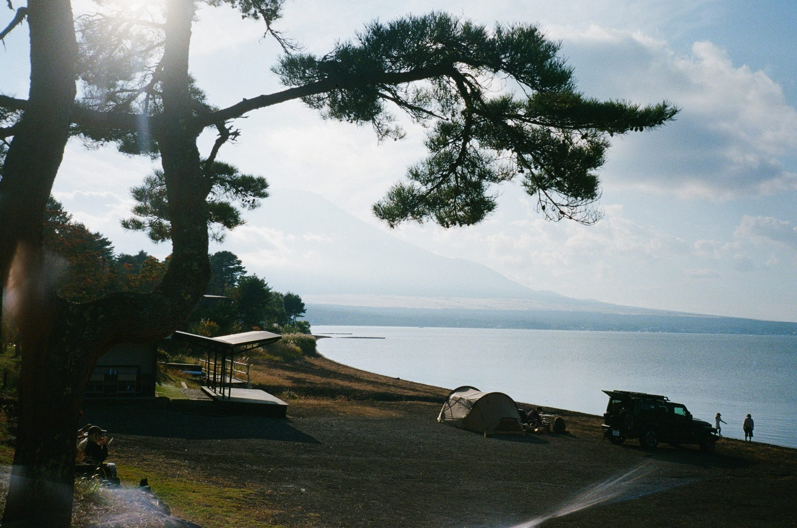
My plan was to ride around it, but then I thought, “You know what? I might never be here again. I should ride up Fuji.” I huffed and I puffed through every turn and switchback, as high as the road goes. It took way longer than I expected, and the higher I got, the colder and more out of breath I was. Finally I made it to the top, and what did I see? California Highway Patrol. My jaw was on the floor. How had the natural predator of the California motorcycle rider found me on Mount Fuji, of all places? Turns out someone imported it because it looked cool. It even had a fake shotgun mounted inside, straight out of an old movie.
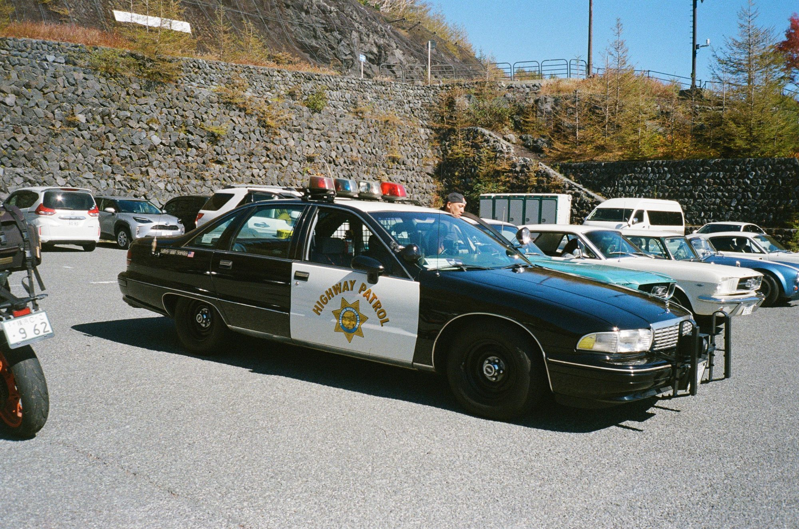
Two unexpected detours later, I was running out of time to make it to my next hotel, with all of the Venus Line still to ride. By the time I got there, I had maybe an hour of light left to make it through the twisties. Instead of the highway, I took the mountain pass like I'd wanted to, and that was a terrible mistake. I ended up riding 3+ hours of mountain roads covered in wet leaves, in the dark, alone, with no service.
This was one of the dumber things I've done in recent memory, and I was terrified I'd signed my own death sentence up there. My heart was racing and animals were jumping out in front of me left and right, and then, out of nowhere: the JAXA Usuda Deep Space Center. I immediately stopped. I was so excited to be that close to such precise astronomy equipment.
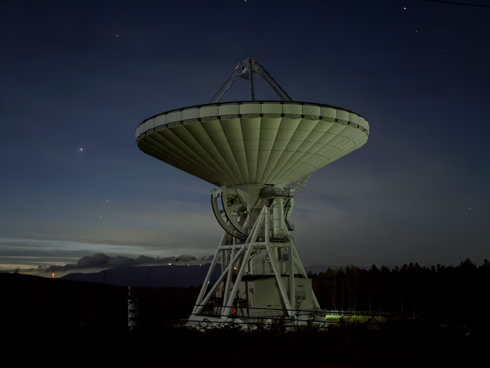
Shortly after the radio telescope, I was back on the highway and could hightail it to my hotel in Shibu Onsen, a town with volcano-heated spring water. The lady who ran the ryokan was unbelievably nice and made me feel right at home in the onsen and baths. Then I went to a bar nearby and had an incredible night meeting strangers, locals, and foreigners.
Day 4: Volcanoes home
On day 4, I realized my film camera hadn't been shooting for most of the trip. The majority of the photos I'd put so much effort into were gone. I was a little devastated, and the ride home was full of sadness for the lost photography.
But part of why I shoot film is its ephemeral nature. This is one of the risks, and I have to accept it if I want to keep enjoying film as much as I do.
I rode through Joshin'etsu Kogen National Park and saw a lot of volcanic activity on the way back, which was a really interesting thing to experience. Eventually I ran short on time and had to head straight for Tokyo to return the bike and start my travel day of repacking, trains, and planes.
It was a day on the highway, but also a day of reflection, and a reminder that I'm capable of anything I choose to do. This was another adventure I could bring my identity and confidence into, and have an incredible time doing something that would have made a previous me very uncomfortable.
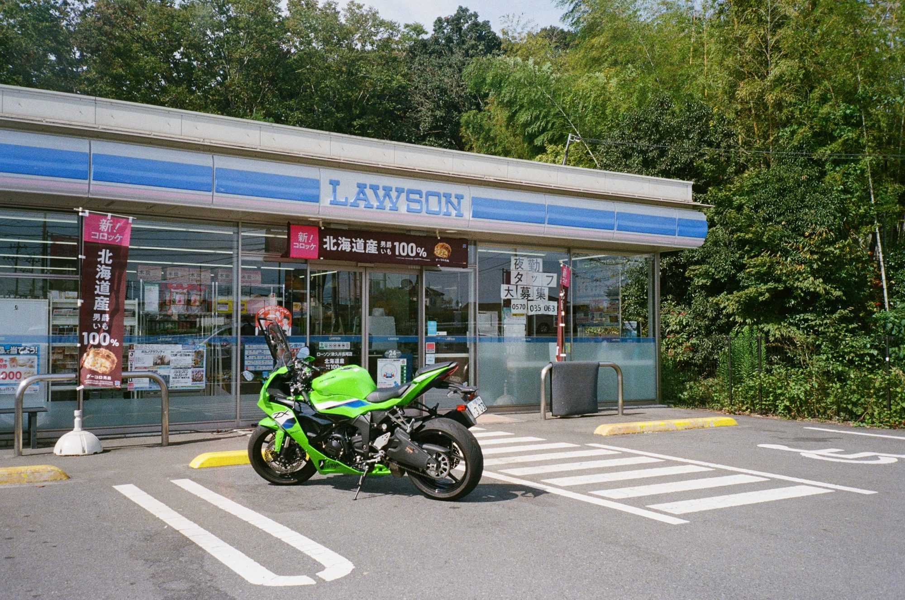
This was probably the easiest international motorcycle trip I've ever done. Japan is very safe and extremely developed. It was still incredibly rewarding. The biggest challenges were:
- Communicating with people who didn't speak English
- Finding people willing to put in the effort to talk over Google Translate
- The isolation of going whole days without meeting many people who had any interest in talking to me
That loneliness is just part of traveling in Japan outside the big cities. Getting through it taught me how to be my own partner: to take care of myself and give myself what I need on the road.
Ultimately, I really benefited from connecting with myself, and I was excited to get back to San Francisco and start building what I believe in, and what I believe I'm capable of.